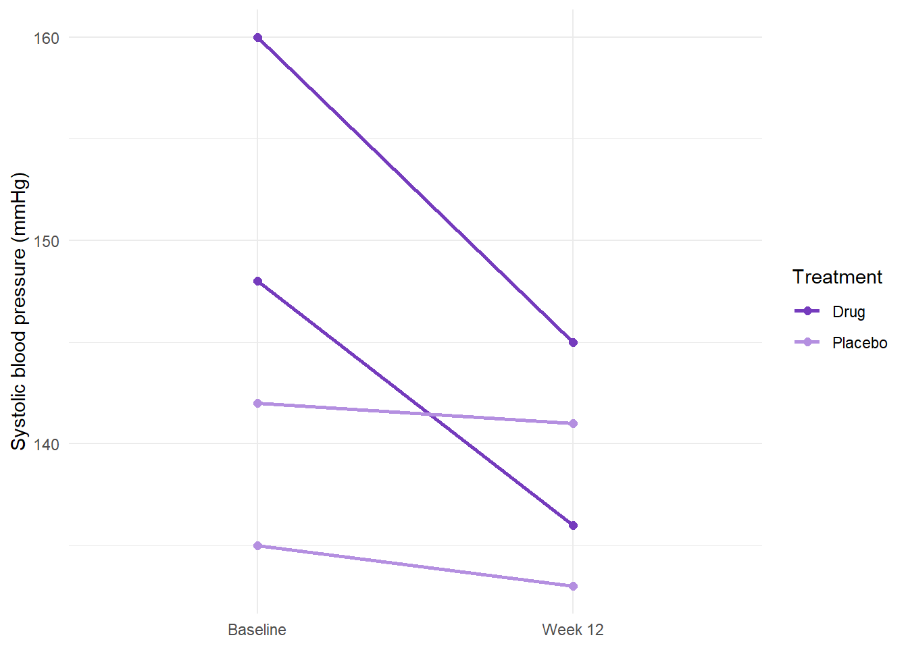

install.packages("janitor")Guide to R 03: Tidy data and wrangling
R for Biomedical Science · Leeds Beckett University
NoteHow to use this guide
This guide is your reference for week 2, session 1. It shows you, step by step, how to turn a messy dataset into one that is ready for analysis. Most of the examples use Dataset.csv, the small file from week 1 whose problems you listed but didn’t fix, so that you can see each problem and its fix side by side. The workbook then asks you to use the same tools on a much bigger dataset. Every piece of output on this page was produced by running the code when the page was built.
Tidy data, and clean data
Before any analysis, a dataset has to be both tidy and clean. The two words mean different things.
Tidy is about shape. A tidy dataset follows three rules:
- each variable has its own column;
- each observation has its own row; and
- each value has its own cell.
Clean is about content: every category is spelled one way, numbers are stored as numbers, missing results are recorded as missing rather than as a made-up number, and nobody appears twice by accident.
Spreadsheets break both sets of rules all the time, usually for good reasons: a layout that is easy to type into is often not the layout R needs. The skill you’re learning this week is getting from one to the other in code, so that every change is recorded and can be repeated.
ImportantNever edit the raw data file
It is tempting to open the CSV in Excel and fix things by hand. Don’t. A hand edit leaves no record of what was changed, can’t be repeated when new data arrives, and is easy to get wrong without noticing (Excel, for example, silently turns some gene names into dates). Keep the original file exactly as you received it, and do every fix in your code. If you make a mistake, you can always start again from the raw file.
A routine for cleaning any dataset
The order below works for almost every dataset you will meet. The rest of this guide follows it.
- Import, and look.
glimpse(),summary()andcount()on every categorical column. - Tidy the column names.
clean_names(), thenrename()where needed. - Fix the types. Numbers stored as text:
as.numeric()orparse_number(). - Fix the categories. One spelling per category:
case_when(), thenfactor(). - Deal with missing values. Find codes such as -99 and turn them into
NA; then decide how to handle theNAs. - Remove accidental duplicates.
distinct(). - Change the shape if you need to.
pivot_longer()andpivot_wider(). - Check after every step, then save a clean copy under a new name.
Packages for this session
Everything here comes from the tidyverse except clean_names(), which is in the janitor package. Install janitor once, in the Console:
Then load both at the top of your workbook or script:
library(tidyverse)
library(janitor)The tidyverse includes stringr, for working with text (its functions all start str_), and tidyr, for changing the shape of a table. You don’t need to load them separately.
Step 1: Import, and look
Import the file and keep it under a name that makes clear it is untouched. Every cleaning step will then build a new object from it.
patients_raw <- read_csv("data/Dataset.csv")Rows: 5 Columns: 7
── Column specification ────────────────────────────────────────────────────────
Delimiter: ","
chr (5): Patient_ID, Sex, CRP_mg.L, COVID_Result, FollowUp_Required
dbl (2): Age, WBC_Count_10^9.L
ℹ Use `spec()` to retrieve the full column specification for this data.
ℹ Specify the column types or set `show_col_types = FALSE` to quiet this message.patients_raw# A tibble: 5 × 7
Patient_ID Age Sex CRP_mg.L `WBC_Count_10^9.L` COVID_Result
<chr> <dbl> <chr> <chr> <dbl> <chr>
1 P001 45 M 12.5 8.4 "Positive"
2 P002 38 F 8.1 7.2 "positive"
3 P003 52 male <NA> 6.9 "NEG"
4 P004 29 Female 5.3 NA "\"negative\""
5 P005 NA M High 10.2 "Pos"
# ℹ 1 more variable: FollowUp_Required <chr>With five rows you can see everything at once. With hundreds you can’t, and you need tools that summarise each column for you. glimpse() and summary() (from week 1) show each column’s type and range. For a categorical column, the most useful tool is count(), which lists every distinct value and how many rows have it:
patients_raw |> count(Sex)# A tibble: 4 × 2
Sex n
<chr> <int>
1 F 1
2 Female 1
3 M 2
4 male 1patients_raw |> count(COVID_Result)# A tibble: 5 × 2
COVID_Result n
<chr> <int>
1 "\"negative\"" 1
2 "NEG" 1
3 "Pos" 1
4 "Positive" 1
5 "positive" 1patients_raw |> count(FollowUp_Required)# A tibble: 5 × 2
FollowUp_Required n
<chr> <int>
1 No 1
2 T 1
3 Y 1
4 Yes 1
5 n 1Every distinct spelling is a separate category as far as R is concerned. Sex should have two categories and has four; COVID_Result should have two and has five, one of which ("negative") has quotation marks stored inside the value; and FollowUp_Required includes a T, which might mean “true” or might be a typing slip.
| Code | What it does |
|---|---|
patients_raw |> |
Takes the raw data and then passes it to the next function. |
count(Sex) |
Counts the rows for each distinct value of Sex. The result is a small tibble: one row per value, and a column n holding the counts. |
It also pays to count the missing values in every column:
colSums(is.na(patients_raw)) Patient_ID Age Sex CRP_mg.L
0 1 0 1
WBC_Count_10^9.L COVID_Result FollowUp_Required
1 0 0 | Code | What it does |
|---|---|
is.na(patients_raw) |
Checks every cell, giving TRUE where the value is missing and FALSE where it isn’t. |
colSums(...) |
Adds up each column. TRUE counts as 1 and FALSE as 0, so the total is the number of missing values in that column. |
read_csv() turns empty cells and cells containing NA into missing values automatically, so P003’s CRP and P004’s white cell count are already NA. Notice what isn’t counted: P005’s CRP is recorded as “High”, which is not missing, just not a number. We’ll come back to it in Step 3.
Step 2: Tidy the column names
The column names in this file use a mixture of styles (Patient_ID, CRP_mg.L, FollowUp_Required), and one contains a ^, which isn’t allowed in an R name. clean_names() converts every name to the same style in one go:
patients <- patients_raw |> clean_names()
tibble(before = names(patients_raw), after = names(patients))# A tibble: 7 × 2
before after
<chr> <chr>
1 Patient_ID patient_id
2 Age age
3 Sex sex
4 CRP_mg.L crp_mg_l
5 WBC_Count_10^9.L wbc_count_10_9_l
6 COVID_Result covid_result
7 FollowUp_Required follow_up_requiredEvery name is now in lower case; anything that isn’t a letter or a number has become an underscore; and words that were run together with capital letters have been split (FollowUp has become follow_up). This style is called snake case, and it’s the one used throughout the tidyverse.
| Code | What it does |
|---|---|
patients <- |
Stores the result in a new object, patients. patients_raw is left exactly as it was. |
patients_raw |> clean_names() |
Takes the raw data and gives back the same data with tidied column names. |
tibble(before = ..., after = ...) |
Builds a small two-column table so that the old and new names can be compared side by side. |
clean_names() fixes the style of the names, but it can’t make them short or meaningful. wbc_count_10_9_l is legal but tedious to type, so give it a better name with rename(). The new name goes on the left of the =, and the existing name on the right:
patients <- patients |> rename(wbc = wbc_count_10_9_l)
names(patients)[1] "patient_id" "age" "sex"
[4] "crp_mg_l" "wbc" "covid_result"
[7] "follow_up_required"
TipKeep the units somewhere
Short names lose information: wbc doesn’t tell a reader that the values are × 109/L. Put the units in your axis labels and table headings, and in a note at the top of your script.
Step 3: Numbers stored as text
You met this problem in week 1: one entry of “High” was enough to make R read the whole CRP column as text. as.numeric() converts it to numbers, and anything that isn’t a number becomes NA, with a warning:
patients <- patients |> mutate(crp_mg_l = as.numeric(crp_mg_l))Warning: There was 1 warning in `mutate()`.
ℹ In argument: `crp_mg_l = as.numeric(crp_mg_l)`.
Caused by warning:
! NAs introduced by coercionRead that warning, and decide whether you are happy with what it describes. Here, P005’s CRP was presumably high enough to be off the scale of the analyser, so turning it into “unknown” throws away real information. In a write-up you would say what you did and why.
A different version of the same problem is a number with text stuck to it: "63 yrs" rather than 63. as.numeric() would turn every one of those into NA. parse_number() (from the readr package) is smarter: it finds the first number in each value and drops the text around it.
ages <- c("54", "63 yrs", "72 years", "about 40")
as.numeric(ages)Warning: NAs introduced by coercion[1] 54 NA NA NAparse_number(ages)[1] 54 63 72 40parse_number() is very helpful, but it does exactly what it says and no more. It would turn "2 to 3 days" into 2, and "<0.5" into 0.5, without any warning. Always look at the values you’re converting before you trust the result.
Step 4: One spelling per category
Recoding with case_when()
case_when() goes inside mutate() and works through a set of rules in order. Each rule has a condition, a tilde (~, read it as “then”) and the value to use:
patients <- patients |>
mutate(
sex = str_to_lower(sex),
sex = case_when(
sex %in% c("m", "male") ~ "Male",
sex %in% c("f", "female") ~ "Female"
)
)
patients |> count(sex)# A tibble: 2 × 2
sex n
<chr> <int>
1 Female 2
2 Male 3| Code | What it does |
|---|---|
mutate( |
Changes or creates columns. Each line inside is one change, and they happen in order. |
sex = str_to_lower(sex), |
Converts every value of sex to lower case, so “Female” becomes “female” and “M” becomes “m”. This halves the number of spellings the next step has to handle. |
sex = case_when( |
Replaces sex with the result of the rules that follow. |
sex %in% c("m", "male") ~ "Male", |
If the value is one of “m” or “male”, then use “Male”. |
sex %in% c("f", "female") ~ "Female" |
If it is “f” or “female”, then use “Female”. |
patients |> count(sex) |
Checks the result. Two categories, adding up to five patients, means every value matched a rule. |
Any value that matches no rule becomes NA. That is a safety feature: if a spelling turns up that you didn’t expect (say, “fem”), it appears as NA in your count() instead of being quietly put in the wrong group. This is why every recode should be followed by a count().
COVID_Result needs one extra step, because one value has quotation marks stored inside it. str_remove_all() deletes every copy of a piece of text; here, the piece of text is a double quotation mark, which has to be written inside single quotation marks, '"':
patients <- patients |>
mutate(
covid_result = str_to_lower(covid_result),
covid_result = str_remove_all(covid_result, '"'),
covid_result = case_when(
covid_result %in% c("positive", "pos") ~ "Positive",
covid_result %in% c("negative", "neg") ~ "Negative"
)
)
patients |> count(covid_result)# A tibble: 2 × 2
covid_result n
<chr> <int>
1 Negative 2
2 Positive 3When a value can’t be recoded with confidence
follow_up_required contains “Yes”, “Y”, “No”, “n” and “T”. The first four are clear. “T” is not: it might mean “true”, or it might be a slip of the finger. The honest thing to do is to leave it out of the rules, so that it becomes NA, and record the decision:
patients <- patients |>
mutate(
follow_up_required = case_when(
follow_up_required %in% c("Yes", "Y") ~ "Yes",
follow_up_required %in% c("No", "n") ~ "No"
# "T" is ambiguous, so it is deliberately left to become NA
)
)
patients |> count(follow_up_required)# A tibble: 3 × 2
follow_up_required n
<chr> <int>
1 No 2
2 Yes 2
3 <NA> 1If you can check the original record, do. If you can’t, a missing value is better than a guess that nobody knows was a guess.
Factors
A factor is R’s way of storing a categorical variable with a fixed set of categories, called levels. Statistical tests and plots treat factors as groups, and the order of the levels decides the order in which groups appear in tables and on plot axes. (In regression, later in the module, the first level is also the reference group that the others are compared with.) Unless you say otherwise, R puts the levels in alphabetical order. To choose the order yourself, list the levels:
patients <- patients |>
mutate(
sex = factor(sex, levels = c("Female", "Male")),
covid_result = factor(covid_result, levels = c("Negative", "Positive"))
)
glimpse(patients)Rows: 5
Columns: 7
$ patient_id <chr> "P001", "P002", "P003", "P004", "P005"
$ age <dbl> 45, 38, 52, 29, NA
$ sex <fct> Male, Female, Male, Female, Male
$ crp_mg_l <dbl> 12.5, 8.1, NA, 5.3, NA
$ wbc <dbl> 8.4, 7.2, 6.9, NA, 10.2
$ covid_result <fct> Positive, Positive, Negative, Negative, Positive
$ follow_up_required <chr> "Yes", "Yes", "No", "No", NAglimpse() now shows sex and covid_result as <fct>. factor() can also replace short codes with readable labels at the same time. The levels are the values as they appear in the data, and the labels are what you want to see instead, in the same order:
data <- data |>
mutate(group = factor(group,
levels = c("UC", "ILP"),
labels = c("Usual care", "Intensive lifestyle")))You’ll use exactly this in the workbook.
Step 5: Missing values
NA in calculations
R’s symbol for a missing value is NA (“not available”). Most calculations involving an NA give NA, because if one value is unknown, the answer is strictly unknown too:
mean(patients$age)[1] NAmean(patients$age, na.rm = TRUE)[1] 41na.rm = TRUE (“NA remove: yes”) tells the function to use the values it has. That’s usually what you want, but it means the answer is based on fewer observations, so report how many: sum(!is.na(patients$age)) counts the values that are not missing (! means “not”).
Codes that mean “missing”
Some datasets use a number such as -99, 999 or 9999 to mean “no result”. R has no way of knowing that, so it treats the code as a real measurement, with dramatic effects on means, ranges and plots:
lab <- tibble(glucose = c(5.4, 6.1, -99, 5.8, 999, 6.4))
lab |> summarise(mean_glucose = mean(glucose))# A tibble: 1 × 1
mean_glucose
<dbl>
1 154.The clue is usually in summary(): a minimum or maximum that is biologically impossible. if_else() swaps the codes for NA:
lab <- lab |>
mutate(glucose = if_else(glucose %in% c(-99, 999), NA, glucose))
lab |> summarise(mean_glucose = mean(glucose, na.rm = TRUE))# A tibble: 1 × 1
mean_glucose
<dbl>
1 5.92| Code | What it does |
|---|---|
if_else( |
Chooses between two values for every row, depending on a condition. |
glucose %in% c(-99, 999), |
The condition: is the value one of the codes? |
NA, |
The value to use where the condition is TRUE. |
glucose) |
The value to use where it is FALSE: the original value, unchanged. |
If you already know the codes before you import, read_csv() can turn them into NA as it reads the file: read_csv("data/file.csv", na = c("", "NA", "-99", "999")). Be careful, though: this applies to every column, so it would also wipe out a genuine 999 anywhere else in the file.
Deciding what to do with missing values
Once the missing values are recorded as NA, you have to decide how to handle them. There are two common approaches.
Removing rows with missing values, also called complete-case analysis:
patients |> drop_na() # rows with no missing values at all# A tibble: 2 × 7
patient_id age sex crp_mg_l wbc covid_result follow_up_required
<chr> <dbl> <fct> <dbl> <dbl> <fct> <chr>
1 P001 45 Male 12.5 8.4 Positive Yes
2 P002 38 Female 8.1 7.2 Positive Yes patients |> drop_na(age) # rows where age, specifically, isn't missing# A tibble: 4 × 7
patient_id age sex crp_mg_l wbc covid_result follow_up_required
<chr> <dbl> <fct> <dbl> <dbl> <fct> <chr>
1 P001 45 Male 12.5 8.4 Positive Yes
2 P002 38 Female 8.1 7.2 Positive Yes
3 P003 52 Male NA 6.9 Negative No
4 P004 29 Female 5.3 NA Negative No drop_na() with nothing in the brackets keeps only the rows with no missing values anywhere: here, just two of the five patients. Naming a column, as in drop_na(age), removes only the rows where that column is missing, which usually loses far less.
Removing rows is quick, and many functions need complete data. But it can throw away a lot: in biomedical datasets, missing values are common, and a few in each of several columns can remove most of the rows. More seriously, if the missingness isn’t random (for example, if the sickest patients are the ones least likely to complete their tests), removing those patients biases the results. So complete-case analysis is reasonable only when few values are missing, the missingness is plausibly random, and the analysis doesn’t need every last observation.
Replacing missing values with a stand-in value, a simple form of imputation:
patients |> mutate(age = replace_na(age, mean(age, na.rm = TRUE)))# A tibble: 5 × 7
patient_id age sex crp_mg_l wbc covid_result follow_up_required
<chr> <dbl> <fct> <dbl> <dbl> <fct> <chr>
1 P001 45 Male 12.5 8.4 Positive Yes
2 P002 38 Female 8.1 7.2 Positive Yes
3 P003 52 Male NA 6.9 Negative No
4 P004 29 Female 5.3 NA Negative No
5 P005 41 Male NA 10.2 Positive <NA> This keeps every row, but it must be done carefully. Filling gaps with the mean makes the data look less variable than it really is, and can hide real patterns. Replacing every missing CRP with the average, for instance, ignores the fact that CRP is often only measured in patients who are unwell. If you do impute, choose a value that makes sense in context, document and justify it, and consider adding a column that flags which values were imputed. More sophisticated methods exist (and are beyond this module), but the principle is the same.
Why the data is missing matters more than how much
The right approach depends on why values are missing. There are three broad types:
- Missing completely at random (MCAR): missingness is unrelated to anything, such as a sample dropped on the floor. Removing or imputing is unlikely to introduce bias.
- Missing at random (MAR): missingness depends on something you have measured, such as older patients being less likely to attend follow-up.
- Missing not at random (MNAR): missingness depends on the missing value itself, such as patients with the most severe illness not returning for blood tests.
You can’t usually prove which applies from the data alone; it needs knowledge of how the data were collected. Whatever you decide, the rule is the same: explore the missing values first, make the decision deliberately, and report what you did.
Step 6: Duplicate rows
The file covid.csv is a small dataset in which some patients have been entered twice:
covid <- read_csv("data/covid.csv")Rows: 8 Columns: 6
── Column specification ────────────────────────────────────────────────────────
Delimiter: ","
chr (3): Patient_ID, Sex, COVID_Result
dbl (3): Age, CRP_mg.L, WBC
ℹ Use `spec()` to retrieve the full column specification for this data.
ℹ Specify the column types or set `show_col_types = FALSE` to quiet this message.covid# A tibble: 8 × 6
Patient_ID Age Sex CRP_mg.L WBC COVID_Result
<chr> <dbl> <chr> <dbl> <dbl> <chr>
1 P001 45 M 12.5 8.4 Positive
2 P002 38 F 8.1 7.2 Positive
3 P003 52 M 7.4 6.9 Negative
4 P004 29 F 5.3 6.2 Negative
5 P003 52 M 7.4 6.9 Negative
6 P005 60 M 9 7.5 Positive
7 P002 38 F 8.1 7.2 Positive
8 P006 34 F 6.1 5.8 Negative In eight rows the repeats are easy to spot by eye; in a large dataset they aren’t. Counting how many rows each patient ID has, then keeping the IDs with more than one, finds them:
covid |> count(Patient_ID) |> filter(n > 1)# A tibble: 2 × 2
Patient_ID n
<chr> <int>
1 P002 2
2 P003 2distinct() removes rows that are exact copies of an earlier row:
covid_clean <- covid |> distinct()
covid_clean# A tibble: 6 × 6
Patient_ID Age Sex CRP_mg.L WBC COVID_Result
<chr> <dbl> <chr> <dbl> <dbl> <chr>
1 P001 45 M 12.5 8.4 Positive
2 P002 38 F 8.1 7.2 Positive
3 P003 52 M 7.4 6.9 Negative
4 P004 29 F 5.3 6.2 Negative
5 P005 60 M 9 7.5 Positive
6 P006 34 F 6.1 5.8 Negative distinct() only removes rows that are identical in every column. If the same patient ID appears twice with different values, that’s a different problem: two different results, or two different patients given the same ID by mistake. Investigate it rather than deleting one of them.
Step 7: Wide and long
From wide to long
Here are four patients’ systolic blood pressures, measured at the start of a study and again after 12 weeks:
bp_wide <- tibble(
patient = c("P01", "P02", "P03", "P04"),
treatment = c("Drug", "Placebo", "Drug", "Placebo"),
sbp_baseline = c(148, 135, 160, 142),
sbp_week_12 = c(136, 133, 145, 141)
)
bp_wide# A tibble: 4 × 4
patient treatment sbp_baseline sbp_week_12
<chr> <chr> <dbl> <dbl>
1 P01 Drug 148 136
2 P02 Placebo 135 133
3 P03 Drug 160 145
4 P04 Placebo 142 141This is wide format: one row per patient, with the measurements at different times in different columns. It’s the natural way to type data in, but it isn’t tidy: “timepoint” is a variable, and it is hidden in the column names. Long format gives each measurement its own row, with the timepoint in a column of its own. pivot_longer() does the conversion:
bp_long <- bp_wide |>
pivot_longer(
cols = c(sbp_baseline, sbp_week_12),
names_to = "timepoint",
values_to = "sbp"
)
bp_long# A tibble: 8 × 4
patient treatment timepoint sbp
<chr> <chr> <chr> <dbl>
1 P01 Drug sbp_baseline 148
2 P01 Drug sbp_week_12 136
3 P02 Placebo sbp_baseline 135
4 P02 Placebo sbp_week_12 133
5 P03 Drug sbp_baseline 160
6 P03 Drug sbp_week_12 145
7 P04 Placebo sbp_baseline 142
8 P04 Placebo sbp_week_12 141| Code | What it does |
|---|---|
pivot_longer( |
Stacks several columns into two. |
cols = c(sbp_baseline, sbp_week_12), |
The columns to stack. Every other column (patient, treatment) is repeated on each new row. |
names_to = "timepoint", |
The name of the new column that holds the old column names. It’s in quotation marks because it doesn’t exist yet. |
values_to = "sbp" |
The name of the new column that holds the values. |
Four patients × two timepoints = eight rows. Two quick tips: if the columns to stack share a beginning, cols = starts_with("sbp") saves typing; and you can tidy up the timepoint labels, and fix their order, with factor(), exactly as in Step 4:
bp_long <- bp_long |>
mutate(timepoint = factor(timepoint,
levels = c("sbp_baseline", "sbp_week_12"),
labels = c("Baseline", "Week 12")))
bp_long# A tibble: 8 × 4
patient treatment timepoint sbp
<chr> <chr> <fct> <dbl>
1 P01 Drug Baseline 148
2 P01 Drug Week 12 136
3 P02 Placebo Baseline 135
4 P02 Placebo Week 12 133
5 P03 Drug Baseline 160
6 P03 Drug Week 12 145
7 P04 Placebo Baseline 142
8 P04 Placebo Week 12 141Without the levels, R would put text labels in alphabetical order. That happens to work here, but it wouldn’t for labels such as “Baseline”, “3 months” and “6 months”, where alphabetical order would put “Baseline” last.
Why long format helps
Most tidyverse functions expect long data. A plot of each patient’s change over time, for example, needs the timepoint in one column and the blood pressure in another:
ggplot(bp_long, aes(x = timepoint, y = sbp, group = patient, colour = treatment)) +
geom_line(linewidth = 1) +
geom_point(size = 2) +
scale_colour_manual(values = c(Drug = "#753bbd", Placebo = "#b48fe0")) +
labs(x = NULL, y = "Systolic blood pressure (mmHg)", colour = "Treatment") +
theme_minimal()
| Code | What it does |
|---|---|
aes(x = timepoint, y = sbp, ...) |
Puts the timepoint on the x axis and blood pressure on the y axis. |
group = patient |
Tells ggplot which points belong together, so geom_line() draws one line per patient. Without it, ggplot would treat each timepoint as a separate group and have nothing to join. |
colour = treatment |
Colours each line by treatment group. |
geom_line(linewidth = 1) + |
Draws the lines, slightly thicker than the default. |
geom_point(size = 2) + |
Adds a point at each measurement. |
scale_colour_manual(values = ...) |
Chooses the colours yourself, rather than using ggplot’s defaults. Each group name is matched to a colour code (a hex code: # and six characters). |
labs(x = NULL, ...) |
Sets the axis and legend labels; NULL removes the x-axis title, which isn’t needed here. |
theme_minimal() |
A plainer background than ggplot’s default grey. |
From long to wide
pivot_wider() goes the other way. You’ll need it occasionally, for example for a paired t-test in week 4, which wants the two measurements on each patient side by side:
bp_long |> pivot_wider(names_from = timepoint, values_from = sbp)# A tibble: 4 × 4
patient treatment Baseline `Week 12`
<chr> <chr> <dbl> <dbl>
1 P01 Drug 148 136
2 P02 Placebo 135 133
3 P03 Drug 160 145
4 P04 Placebo 142 141Neither shape is “wrong”: wide is easier to read and type, long is what most analysis and plotting functions need. What matters is being able to move between them.
Step 8: Summaries by group
Once data is tidy, group_by() followed by summarise() gives a summary for every group. You’ll do much more of this in session 2; here is the basic pattern:
bp_long |>
group_by(treatment, timepoint) |>
summarise(
n = sum(!is.na(sbp)),
mean_sbp = mean(sbp, na.rm = TRUE)
) |>
ungroup()`summarise()` has regrouped the output.
ℹ Summaries were computed grouped by treatment and timepoint.
ℹ Output is grouped by treatment.
ℹ Use `summarise(.groups = "drop_last")` to silence this message.
ℹ Use `summarise(.by = c(treatment, timepoint))` for per-operation grouping
(`?dplyr::dplyr_by`) instead.# A tibble: 4 × 4
treatment timepoint n mean_sbp
<chr> <fct> <int> <dbl>
1 Drug Baseline 2 154
2 Drug Week 12 2 140.
3 Placebo Baseline 2 138.
4 Placebo Week 12 2 137 | Code | What it does |
|---|---|
group_by(treatment, timepoint) |
Splits the data into groups: one for each combination of treatment and timepoint. Nothing visible happens yet. |
summarise( |
Calculates one row of summaries for each group. |
n = sum(!is.na(sbp)), |
Counts the values in each group that aren’t missing. |
mean_sbp = mean(sbp, na.rm = TRUE) |
The mean blood pressure in each group. |
ungroup() |
Removes the grouping from the result, so later steps treat it as one ordinary table. |
The message about “grouped output” is information, not an error. When you group by two variables, summarise() removes the last grouping level but keeps the first, and it tells you so. ungroup() removes what’s left. It’s a good habit, because a table that is still grouped can give surprising results in later steps.
Putting it all together
In your own work, once each step has been checked, it’s good practice to collect the whole cleaning process into a single chunk that starts from the raw file. Anyone (including you, in six months’ time) can then see every decision in one place and re-run it from scratch:
patients_clean <- read_csv("data/Dataset.csv") |>
clean_names() |>
rename(wbc = wbc_count_10_9_l) |>
mutate(
# "High" can't be converted, so it becomes NA (see Step 3)
crp_mg_l = as.numeric(crp_mg_l),
sex = str_to_lower(sex),
sex = case_when(
sex %in% c("m", "male") ~ "Male",
sex %in% c("f", "female") ~ "Female"
),
sex = factor(sex, levels = c("Female", "Male")),
covid_result = str_to_lower(covid_result),
covid_result = str_remove_all(covid_result, '"'),
covid_result = case_when(
covid_result %in% c("positive", "pos") ~ "Positive",
covid_result %in% c("negative", "neg") ~ "Negative"
),
covid_result = factor(covid_result, levels = c("Negative", "Positive")),
# "T" is ambiguous, so it is left to become NA (see Step 4)
follow_up_required = case_when(
follow_up_required %in% c("Yes", "Y") ~ "Yes",
follow_up_required %in% c("No", "n") ~ "No"
)
)Rows: 5 Columns: 7
── Column specification ────────────────────────────────────────────────────────
Delimiter: ","
chr (5): Patient_ID, Sex, CRP_mg.L, COVID_Result, FollowUp_Required
dbl (2): Age, WBC_Count_10^9.L
ℹ Use `spec()` to retrieve the full column specification for this data.
ℹ Specify the column types or set `show_col_types = FALSE` to quiet this message.Warning: There was 1 warning in `mutate()`.
ℹ In argument: `crp_mg_l = as.numeric(crp_mg_l)`.
Caused by warning:
! NAs introduced by coercionpatients_clean# A tibble: 5 × 7
patient_id age sex crp_mg_l wbc covid_result follow_up_required
<chr> <dbl> <fct> <dbl> <dbl> <fct> <chr>
1 P001 45 Male 12.5 8.4 Positive Yes
2 P002 38 Female 8.1 7.2 Positive Yes
3 P003 52 Male NA 6.9 Negative No
4 P004 29 Female 5.3 NA Negative No
5 P005 NA Male NA 10.2 Positive <NA> Then save the clean data under a new name, so the raw file is never overwritten:
write_csv(patients_clean, "data/Dataset_clean.csv")Common problems
| What happens | Likely cause |
|---|---|
| A fix seems to have worked, but the next chunk shows the old values. | The result wasn’t saved. patients |> mutate(...) only prints the result; to keep it, write patients <- patients |> mutate(...). |
object 'x' not found partway through a workbook |
An earlier chunk hasn’t been run in this session. Click Run › Run All Chunks Above (Ctrl + Alt + P). |
After case_when(), count() shows an NA you didn’t expect. |
A spelling in the data isn’t in any of your lists. Check capital letters and spaces: "F" and "f" are different. |
could not find function "clean_names" |
janitor isn’t loaded. Add library(janitor) to the top of your file (and install it first if you haven’t). |
Can't subset columns that don't exist |
A column name is misspelled, or you are using the old name after clean_names() or rename(). Run names() to check. |
| Your means are suspiciously large, or negative. | A missing-value code (-99, 999) is still in the data. Look at summary(). |
if_else() says true must be a double vector, not a logical vector. |
Your copy of dplyr is older than version 1.1.0. Update the tidyverse with install.packages("tidyverse"), or write NA_real_ (a missing number) instead of NA. |
Summary
| Task | Code |
|---|---|
| See every value in a column, and how many of each | count(column) |
| Count missing values in each column | colSums(is.na(data)) |
| Tidy all column names | clean_names() (janitor) |
| Rename one column | rename(new_name = old_name) |
| Text to numbers | as.numeric(); parse_number() when there’s text around the number |
| Make text lower case / remove some text | str_to_lower() / str_remove_all(column, "text") |
| Recode categories | case_when(column %in% c(...) ~ "New value", ...) inside mutate() |
| Make a factor, with levels in your order | factor(column, levels = c(...), labels = c(...)) |
Turn a missing-value code into NA |
if_else(column %in% c(-99, 999), NA, column) |
| Ignore missing values in a calculation | mean(column, na.rm = TRUE) |
| Remove rows with missing values | drop_na(), or drop_na(column) |
| Remove exact duplicate rows | distinct() |
| Wide to long / long to wide | pivot_longer() / pivot_wider() |
| Summaries for each group | group_by(...) |> summarise(...) |> ungroup() |
| Save a clean copy | write_csv(data, "data/new_name.csv") |